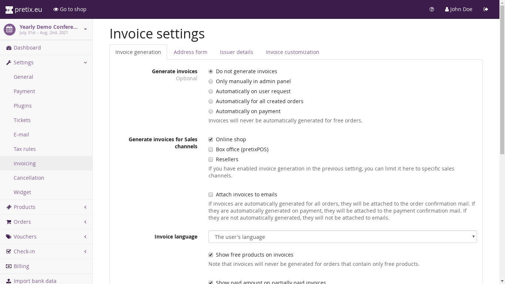

Invoice settings¶
The settings at “Settings” → “Invoice” allow you to specify if and how eventyay should generate invoices for your orders.
{kind=link}
In particular, you can configure the following things:
- Generate invoices
This field controls whether eventyay should generate an invoice for an order. You have the following options:
- No
eventyay will never generate an invoice. If you want to issue invoices, you need to do it yourself based on the collected address data.
- Manually in admin panel
eventyay will not create invoices automatically, but the order detail view will show a button that allows you to manually generate one for specific orders.
- Automatically on user request
eventyay will not create invoices on its own, but both the panel as well as the customer view of the order will show a button that instantly generates an invoice for the specified order.
- Automatically for all created orders
eventyay will automatically create an invoice every time an order is placed.
- Automatically on payment
eventyay will automatically create an invoice for an order, as soon as the payment for the order is received.
eventyay will never generate invoices for free orders, even though it might ask for the invoice address.
- Attach invoices to emails
If enabled, invoices will be attached to order confirmation e-mails if the “Generate invoices” setting is set to “Automatically for all created orders” or to the payment confirmation e-mails if it is set to “Automatically on payment”.
- Invoice number prefix
This is the prefix that will be prepended to all your invoice numbers. For example, if you set this to “Inv”, your invoices will be numbered Inv00001, Inv00002, etc. If you leave this field empty, your event slug will be used, followed by a dash, e.g. DEMOCON-00001.
Within one organizer account, events with the same number prefix will share their number range. For example, if you set this to “Inv” for all of your events, there will be only one invoice numbered Inv00007 across all your events and the numbers will have gaps within one event.
- Generate invoices with consecutive numbers
If enabled, invoices will be created with numerical invoice numbers in the order of their creation, i.e. PREFIX-00001, PREFIX-00002, and so on. If disabled, invoice numbers will instead be generated from the order code, i.e. PREFIX-YHASD-1. When in doubt, keep this option enabled since it might be legally required in your country, but disabling it has the advantage that your customers can not estimate the number of tickets sold by looking at the invoice numbers.
- Invoice language
This setting allows you to configure the language of all invoices. You can either set it to one of your event language or dynamically to the language used by the customer.
- Show free products on invoices
If enabled, products that do not cost anything will still show up on invoices. Note that the order needs to contain at least one non-free product in order to generate an invoice.
- Show attendee names on invoices
If enabled, the attendee name will be printed on the invoice for admission tickets.
- Ask for invoice address
If this checkbox is enabled, customers will be able to enter an invoice address during checkout. If you only enable this box, the invoice address will be optional to fill in.
- Require invoice address
If this checkbox is enabled, entering an invoice address will be obligatory for all customers and it will not be able to create an order without entering an address.
- Require customer name
If this checkbox is enabled, the street, city, and country fields of the invoice address will still be optional but the name field will be obligatory.
- Require a business address
If enabled, the invoice address form will require a company name and do not allow personal addresses.
- Ask for beneficiary
If enabled, the invoice address form will contain an additional field to input the beneficiary of the transaction.
- Ask for VAT ID
If enabled, the invoice address form will not only ask for a postal address, but also for a VAT ID. The VAT ID will always be an optional field.
- Generate invoices with consecutive numbers
If enabled, invoices will be created with numerical invoice numbers in the order of their creation, i.e. PREFIX-00001, PREFIX-00002, and so on. If disabled, invoice numbers will instead be generated from the order code, i.e. PREFIX-YHASD-1. When in doubt, keep this option enabled since it might be legally required in your country, but disabling it has the advantage that your customers can not estimate the number of tickets sold by looking at the invoice numbers.
- Your invoice details
These fields should be set to the address of the entity issuing the invoice (read: you) and will be printed inside the header of the invoice.
- Invoice style
This setting allows you to choose the design of your invoice. Additional designs can be added by eventyay plugins.
- Introductory text
A free custom text that will be printed above the list of products on the invoice.
- Additional text
A free custom text that will be printed below the list of products and the invoice total.
- Footer
A text that will be printed in the foot line of the invoice. This could contain your contact details or legal information on the issuing entity, e.g. registration numbers, your VAT ID, etc.
- Logo image
A square image that will be printed in the invoice header, currently with a width of 2.5cm.